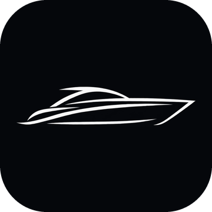
AVANTI VESSEL AI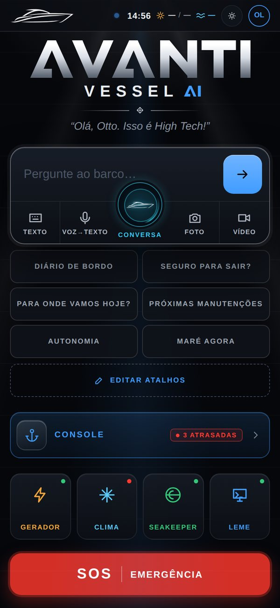
É o “cérebro” digital do barco Avanti Vessel (Azimut Atlantis 51): você pergunta e ele responde com os dados do próprio barco.
Funciona no celular (versão app) e no computador ou tablet (versão web). É um protótipo. Os números de hoje vêm de uma leitura fixa dos sensores feita em 25/09/2026 às 13:40.
Abra https://avantivesselai.github.io/AvantiVessel_AI/ e entre com o seu usuário e a senha que a equipe combinou com você.
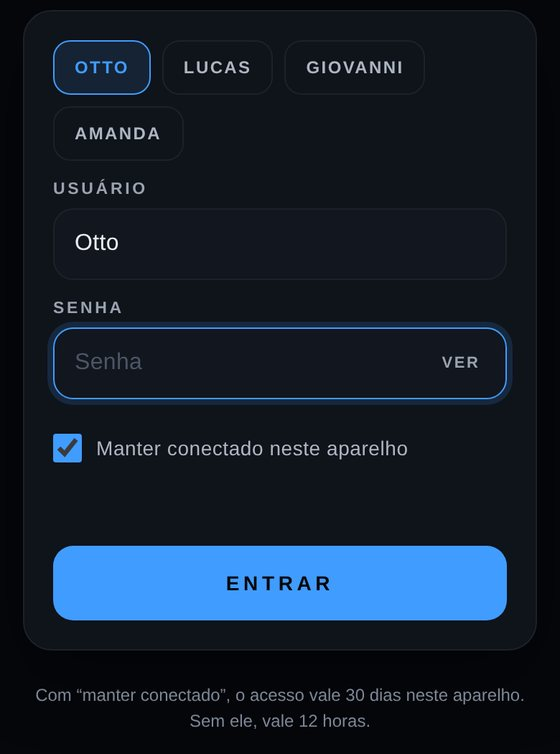
2 3 4 5Para sair: “Sair”, no rodapé, ao lado do seu nome (fecha todas as abas do aparelho). Acesso vencido com a tela aberta volta sozinho ao login.
| “Usuário ou senha incorretos.” | Confira e tente de novo. |
| “Muitas tentativas. Tente de novo em … s.” | Depois de 5 senhas erradas, o login trava por 30 s. Cada nova tentativa errada dobra a espera, até no máximo 15 min. Espere o contador zerar. Erros de mais de 1 hora atrás não contam. |
| “O navegador está bloqueando os dados deste site…” | Permita cookies e dados do site, ou saia da navegação anônima. |
| “Este navegador não permite o login seguro…” | Abra pelo endereço com https:// em um navegador atual (Chrome, Edge, Safari ou Firefox). |
| Abriu a versão errada? | No fim do endereço, acrescente ?v=app (sempre app), ?v=web (sempre web) ou ?v=auto (o app escolhe). |
Instale para abrir em tela cheia, com o ícone Avanti, como um aplicativo comum.
Dica: segure o dedo sobre o ícone para ver atalhos diretos para SOS, Console e Diário.
Tudo começa aqui: na tela inicial você pergunta ao barco, usa os atalhos, abre o console ou aciona o SOS.
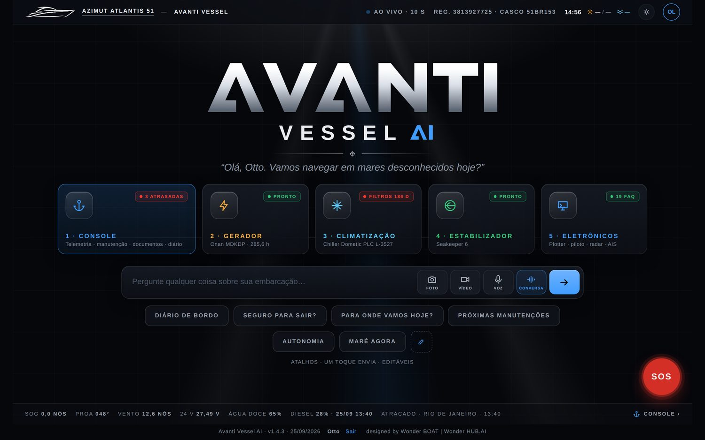
1 2 3 4 5 6 7 8Escreva ou fale do seu jeito. O app responde em segundos e sempre mostra a fonte.
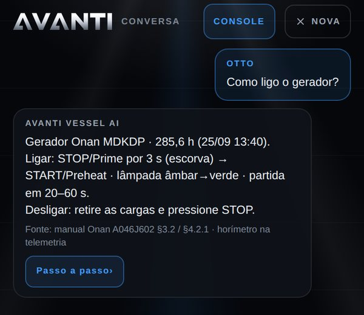
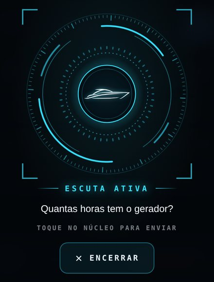
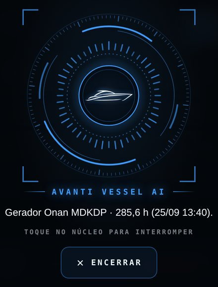
O microfone só liga quando você toca.
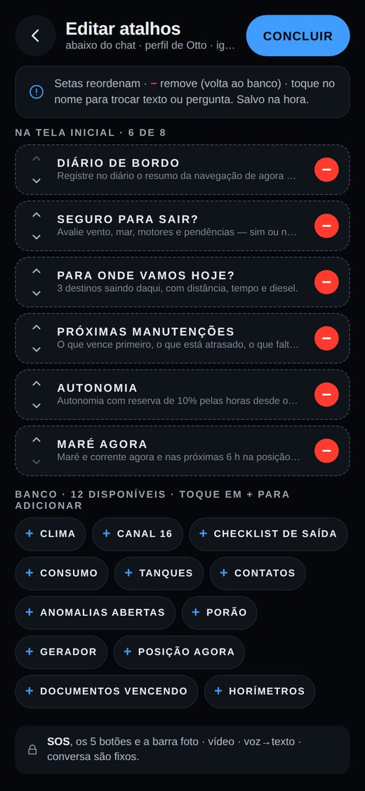
1 2 3 4Os 6 de fábrica: DIÁRIO DE BORDO (registra no diário um resumo do momento), SEGURO PARA SAIR?, PARA ONDE VAMOS HOJE?, PRÓXIMAS MANUTENÇÕES, AUTONOMIA e MARÉ AGORA. Para mudar, toque em EDITAR ATALHOS:
Cabem até 8 atalhos na tela inicial. Tudo é salvo na hora, neste aparelho. O SOS, os botões fixos e a barra de modos não mudam.
Leia primeiro a primeira linha: ela traz o essencial. Depois confira a linha “Fonte”.
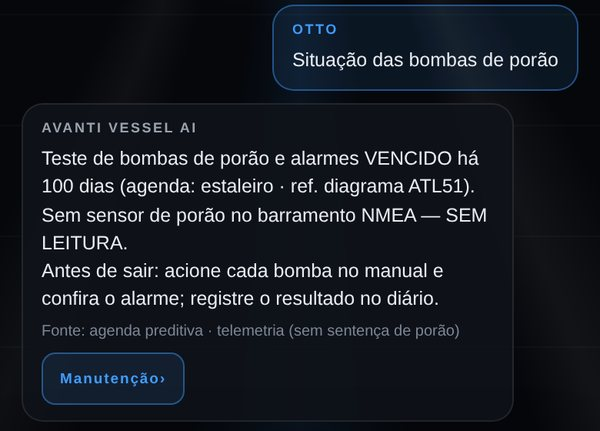
1 2 3Cada resposta tem três partes:
Quando duas fontes discordam, vale esta ordem: manual oficial › registro oficial › laudo › diário › foto › nota informal. Lembre: hoje os números são da leitura fixa de 25/09/2026 às 13:40.
O console é o painel completo do barco. Abra pelo botão CONSOLE da tela inicial.
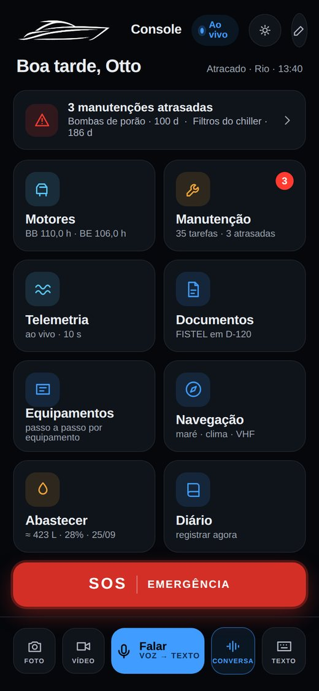
1 2 3 4Na web, as seções ficam no menu da esquerda. No app, aparecem em blocos 2 (Motores, Manutenção, Telemetria, Documentos, Equipamentos, Navegação, Abastecer e Diário). O lápis 1 abre “Editar blocos”: − tira, + adiciona do banco. Embaixo ficam o SOS 3 e a barra de voz, foto, vídeo e texto 4.
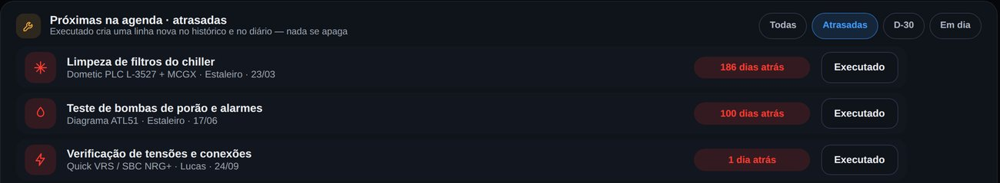
1 2Quase tudo se resolve com internet na 1ª visita, o navegador certo e o microfone liberado.
É normal. Hoje todas as telas e o chat usam a leitura fixa de 25/09/2026 às 13:40 (motores em marcha lenta, gerador e estabilizador ligados). A telemetria ao vivo está pronta, mas desligada. Para saber como o barco está agora, olhe os instrumentos de bordo.
Tudo o que você muda (atalhos, diário, tarefas, documentos enviados, equipe, tema e login) fica salvo só no navegador daquele aparelho. Limpar os dados do navegador apaga tudo. Em aba anônima ou em outro aparelho, você não vê. Nada sincroniza entre aparelhos nem entre pessoas.
BB (bombordo): o lado esquerdo do barco, para quem olha para a frente. Ex.: “motor BB”.
BE (boreste): o lado direito do barco, para quem olha para a frente.
Nó: velocidade no mar: 1 nó = 1 milha náutica (1.852 m) por hora.
SOG: velocidade real, medida pelo GPS. Parado = 0,0 nós.
Proa: a frente do barco. “Proa 048°” é a direção para onde ele aponta, em graus de bússola.
Plotter: a tela de navegação com mapa e GPS (Garmin GPSMAP 8x16). Nela se lê a posição para o MAYDAY e se marca o homem ao mar.
VHF e canal 16: VHF é o rádio de bordo. O canal 16 (156,800 MHz) é o de socorro, urgência e chamada.
MAYDAY: pedido de socorro pelo rádio, só para perigo grave e iminente. Diga 3 vezes.
PAN-PAN: chamada de urgência quando não há risco de vida. Diga 3 vezes.
MMSI: o número que identifica o barco no rádio e no EPIRB: 710400328.
Indicativo: o “nome de rádio” do barco: PV4476.
DSC: chamada digital de socorro do rádio VHF, pelo botão DISTRESS. Usa o MMSI programado no rádio.
EPIRB: radiobaliza de emergência: transmite MMSI, indicativo e posição do GPS. Leve junto se abandonar o barco.
MOB: homem ao mar: alguém caiu na água.
STBY: standby: o piloto automático fica solto, e o barco é manobrado à mão.
Flybridge: área na parte de cima do barco. Segundo o app, é onde fica o EPIRB.
Praça de máquinas: o compartimento dos motores, protegido pelo sistema Sea-Fire.
Sea-Fire: combate a incêndio da praça de máquinas. Painel no salão e cabo de descarga manual de reserva.
Horímetro: contador de horas de uso. Ex.: motor BB 110,0 h, gerador 285,6 h.
Seakeeper (estabilizador): reduz o balanço. Só liga com energia AC (gerador ou cais) e leva 24 minutos para estabilizar.
Chiller: o aparelho central do ar-condicionado (Dometic).
SEM DADOS: não existe fonte a bordo para isso (ex.: maré, previsão do tempo). O app não chuta.
SEM LEITURA: o sensor não manda leitura agora (ex.: motores desligados) ou não há sensor na rede (ex.: porão).
MANUAL NO DRIVE: o manual existe na pasta do barco, mas o passo a passo ainda não foi conferido.
A CONFERIR / A CONFIRMAR: entrou por foto, arquivo enviado ou anotação informal e espera alguém conferir.
VENCIDO · D-19 · ≈: passou do prazo (“186 dias atrás” = venceu há 186 dias) · faltam 19 dias · valor aproximado.
Toque no SOS vermelho (está em todas as telas) e siga os passos do app.
No app: CANAL 16 · MAYDAY. Leia devagar; repita até responderem.
Posição: leia na hora, no plotter. A do app é a última salva (25/09, 13:40): não serve para a chamada.
Sem perigo de vida: PAN-PAN ×3. Marina: canal 67 (24 h).